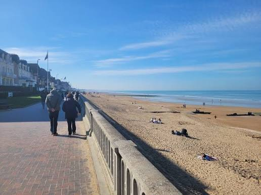
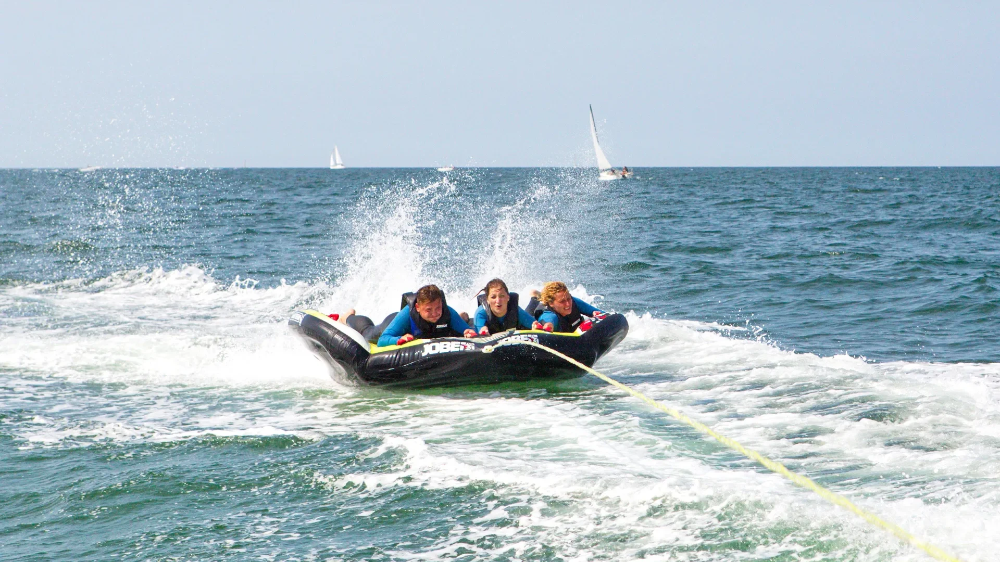
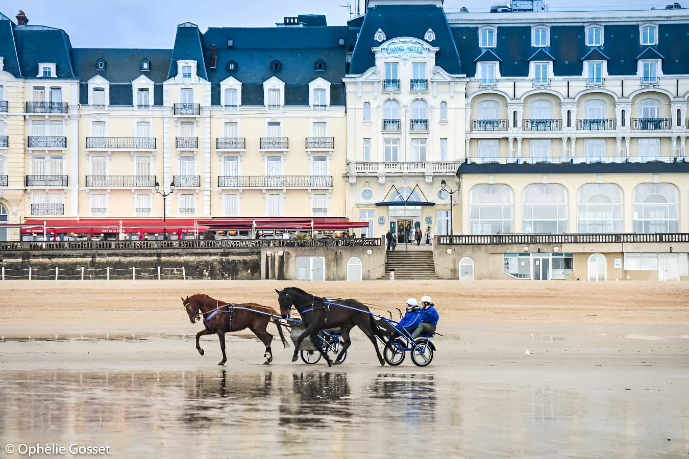
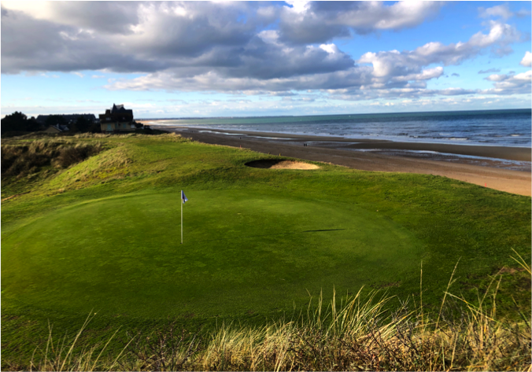
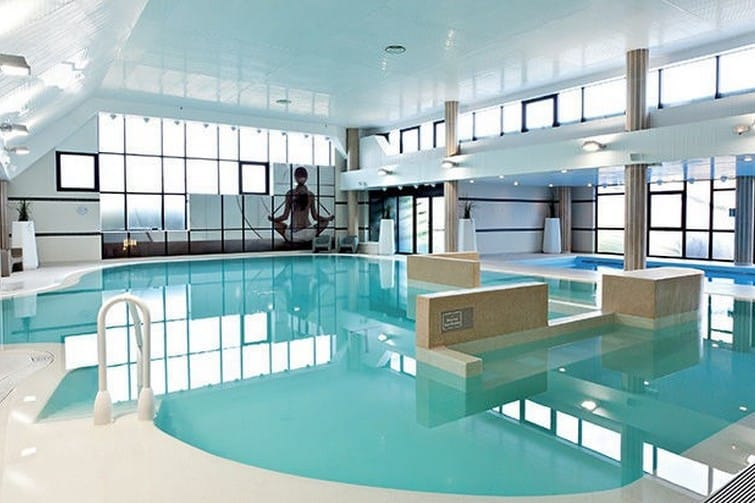
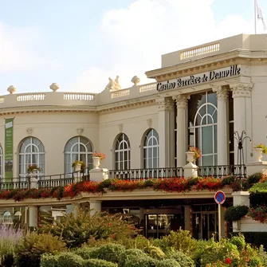

Bord de mer
Profiter des promenades, digues et paysages du littoral.
Découvrir →Vivez la Côte Fleurie à votre rythme
Entre mer, nature, loisirs et détente, découvrez quelques-unes des expériences qui rendent un séjour sur la Côte Fleurie unique.
Prendre le temps de découvrir la Côte Fleurie.

Profiter des promenades, digues et paysages du littoral.
Découvrir →Explorer les paysages, chemins et espaces naturels de la Côte Fleurie.
Découvrir →Bouger, s'amuser et profiter du territoire.

Découvrir la côte depuis la mer et profiter des activités nautiques.
Découvrir →
Découvrir l'univers équestre et les activités hippiques de la région.
Découvrir →
Jouer dans un cadre entre campagne et littoral.
Découvrir →Prendre le temps de ralentir et de se détendre.

Profiter des bienfaits de la mer et s'offrir une parenthèse de détente.
Découvrir →Découvrir, sortir et profiter de la vie locale.

Découvrir une expérience emblématique des stations balnéaires de la Côte Fleurie.
Découvrir →Profiter des événements qui rythment la vie culturelle de la Côte Fleurie.
Découvrir →